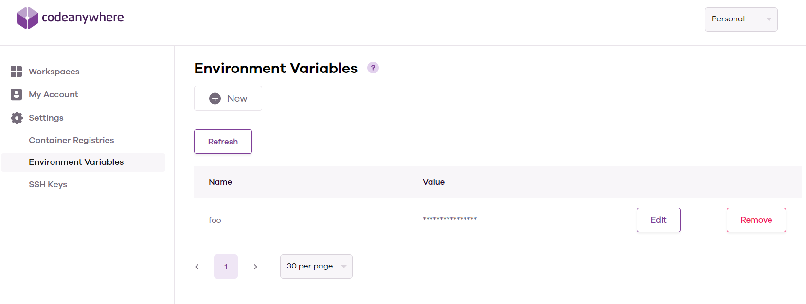
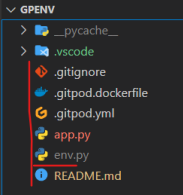

Setting up your environment variables.
The environment means where the project is run. Codeanywhere provides an
environment to develop - Heroku provides an environment for hosting/production.
A variable is analogous to a “bucket” that stores a value for access later.
In code, they are declared like planet = "Earth" or let answer = 42. Combine
them into an environment variable and you have a stored value that is not
declared in the code; This allows different values to be set in each environment
without having to change the code. More importantly, they are used to store
sensitive information that should not be written in the code or be available for
anyone to see, such as secret keys and access credentials.
Env vars can be set in the Codeanywhere dashboard. If set in the dashboard, the scope is global. Be careful to use unique names if you have multiple projects.

After restarting the Codeanywhere workspace, all terminal sessions will have the variables available.
# app.py
import os
print(os.getenv("test"))
To use an env.py file, create one in the root directory of the workspace - the same level as the app.py/manage.py file that will be executed for Flask or Django projects.
Set the variable using the os module with this command
os.environ["variable_name"] = value
# env.py
import os
os.environ["envpy_test"] = "envpy"
As these variables are set using code, they do not exist in the terminal - the echo command will not work. To check these are working, you will need to import them into the python file and print them.

# app.py
import os
if os.path.exists("env.py"):
import env
print(os.getenv("envpy_test"))
/workspace/gpenv (main) $ python app.py
envpy
Remember! Always add your env.py file to the .gitignore file so you don't commit your secret variables to your git repository; This is extremely important.
API services may scan GitHub repositories for exposed API keys, and if one is found, access will be halted until corrective action is taken. If your API key is exposed, anyone who finds it can use it and may cause your account to be charged excess usage fees, as well as having access to your data.